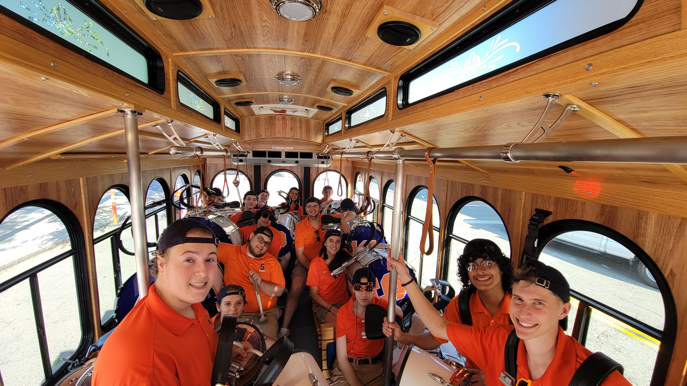
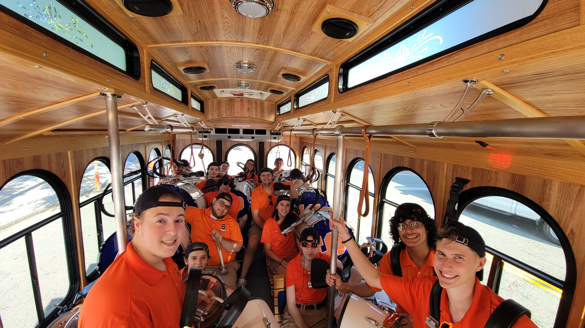

Audition Information
Thank you for your interest in joining the SUMB Drumline – We hope to have you with us this fall! The SU Drumline does require an audition to join. However, this is only for instrument placement. You might not get the instrument of your choice, but you will have a spot in this drumline if you want one.
We will be doing video auditions this year. To audition, prepare the assigned music and submit it all in one video by email to Dr. Rob Bridge (bridger@sunyocc.edu). All music must be performed from memory. Your hands and feet should be present in every video. An audible metronome should also be used. If you’re auditioning on snare drum, traditional grip must be used.
Required Music:
Street Time: All @ 112 BPM, marking time
Double Beat 2004: All @ 120 BPM, feet spread
Mi Scusi Bridge: All @ 112 BPM, feet spread
Roll Timing: All @ 112 BPM, marking time
In addition to the required music, you should also be familiar with the following pieces/exercises by the time band camp starts:
Accents
Three Camps
Run On
Down the Field
You can find all the music needed in the file below:
Drumline HandbookIf you have any questions, feel free to reach out to Dr. Bridge (bridger@sunyocc.edu), our section leaders, or DM our Instagram page @su_dumbline
Good Luck!

 
